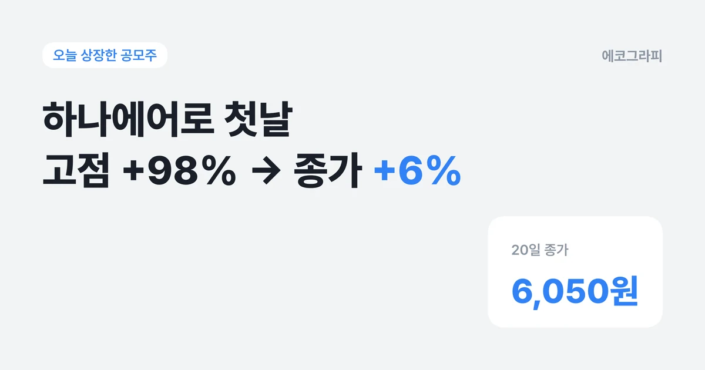
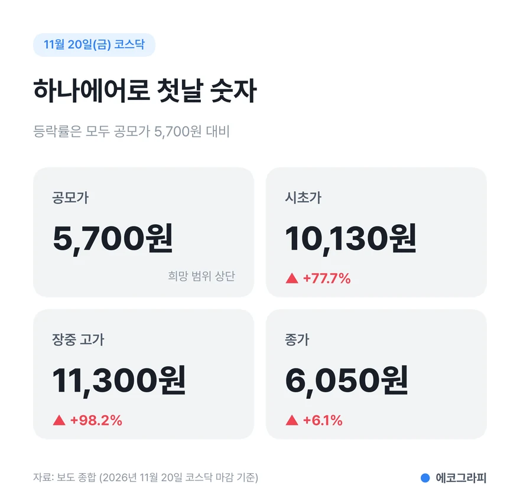
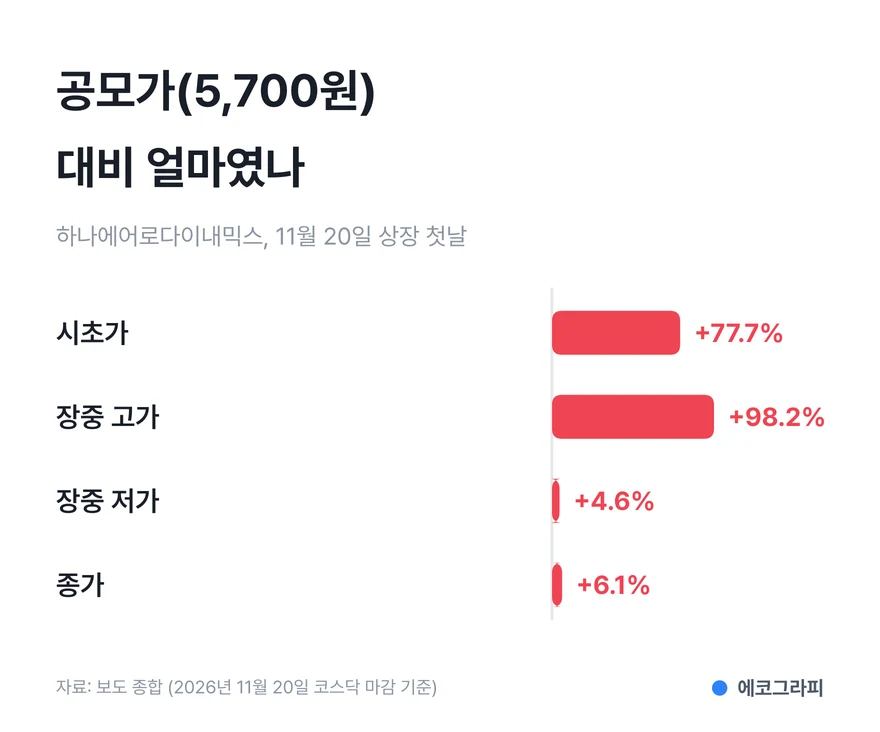
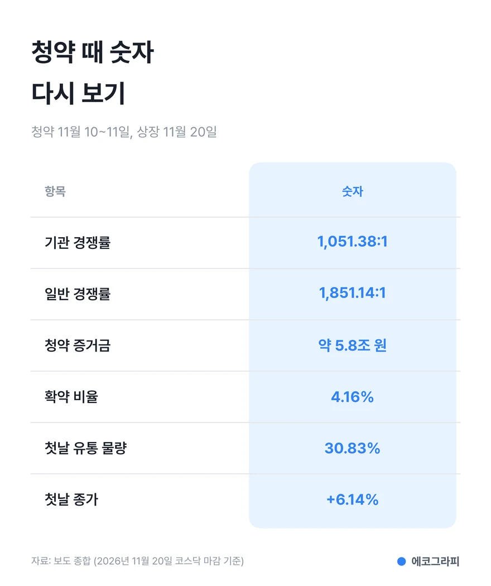

오늘(20일) 새로 상장한 공모주는 하나에어로다이내믹스 한 곳이에요(스팩 제외). 2007년 경남 사천에서 세워진 회사로, 비행기 동체를 조립할 때 쓰는 지그(조립 틀)를 설계·제작하고 항공기 기체 구조물도 만들어요. 주요 고객은 한국항공우주(KAI)와 미국 헬기 회사 벨이에요. 지난해 매출은 약 333억 원, 영업이익은 약 50억 원이었어요. 대표 주관사는 IBK투자증권이었어요.
이번 주 상장 일정 전체는 이번 주 공모주 일정 글에, 그제 상장한 에이엘로봇 이야기는 에이엘로봇 상장 첫날 글에, 공모주가 처음이라면 공모주 청약 기초 글에 정리해 두었어요.


공모가로 받은 사람 기준으로 종가에 팔았다면 1주당 350원 이익이에요. 같은 날이라도 언제 팔았느냐에 따라 결과가 크게 달랐던 하루예요. 시초가 근처였다면 1주당 4천 원 넘게, 종가였다면 350원이었어요.
오늘은 코스피가 5.21%, 코스닥이 5.71% 떨어진 날이었어요. 그제 에이엘로봇은 시장이 오른 날 혼자 빠졌다면, 오늘 하나에어로는 시장 급락의 영향을 크게 받은 경우예요. 오늘 시장 이야기는 오늘 저녁 속보 글에 따로 정리했어요.
한 줄 정리: 공모가의 두 배 가까이 올랐다가 시장 급락에 상승분 대부분을 내주고, 공모가 바로 위에서 마감한 하루였어요.

기관 수요예측에 2,152곳이 참여해 1,051.38:1을 기록했고, 공모가는 희망 범위(4,700~5,700원) 맨 위에서 정해졌어요. 일반 청약은 1,851.14:1로 이번 주 상장 종목 중 가장 높았고, 증거금도 약 5.8조 원이 몰렸어요.
반면 의무보유확약 비율은 4.16%로 낮았고, 그중 상당수가 15일짜리 짧은 확약이었다는 보도도 있어요. 상장 첫날 팔 수 있는 물량도 전체 주식의 30.83%였어요. 첫날 높은 시초가 뒤에 매물이 빠르게 나온 배경으로 볼 수 있어요.
다음 주 월요일 아침 글에서 다음 주 공모주 일정과 함께 이어서 짚을게요.
장 초반 차익 매물이 나온 데다, 오후에 코스피·코스닥이 5% 넘게 빠지며 시장 전체에서 매도가 쏟아졌어요. 확약 비율이 낮고 첫날 유통 물량이 30%대였던 점도 함께 꼽혀요.
종가 6,050원 기준으로 1주당 350원(6.1%)이에요. 실제 손익은 판 가격과 수수료, 세금에 따라 달라요.
첫날 시초가는 공모가의 60~400% 범위에서 정해지고, 그 뒤 장중에는 시초가 기준 ±30% 안에서 움직여요. 둘째 날부터는 전날 종가 기준 ±30%예요.
알 수 없어요. 상장 초기 종목은 시장 분위기와 수급에 따라 변동이 큰 편이에요. 확약 해제 일정처럼 매물이 늘어날 수 있는 날을 미리 알아 두면 좋아요.
※ 2026년 11월 20일 장 마감 기준으로 정리한 글입니다. 시세는 거래소·증권사 HTS에서 한 번 더 확인하세요. 특정 종목의 청약·매수·매도 권유가 아닙니다.